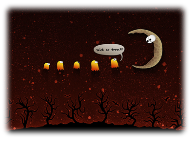

<!DOCTYPE html>
<html lang="ko">
	<head>
		<meta charset="UTF-8">
		<title>if문 활용 계절 문제</title>
		<style>
			body { background : url("images/bg10.gif") left top; opacity : 1; }
		</style>
	</head>
	<body>
		<script>
			let seasons = prompt("어느 계절을 좋아하세요? (1:봄, 2:여름, 3:가을, 4:겨울)", "1");
			
			if ( seasons == "1" ) {
				document.write("<h1>봄을 좋아하시는군요</h1>");
			} else if ( seasons == "2") {
				document.write("<h1>여름을 좋아하시는군요</h1>");
			} else if( seasons == "3") {
				document.write("<h1>가을을 좋아하시는군요</h1>");
			} else if ( seasons == "4" ) {
				document.write("<h1>겨울을 좋아하시는군요</h1>");
			} else {
				alert("잘못 입력하였습니다. F5번 키를 눌러서 다시 입력해주세요.");
			}
		</script>
	</body>
</html>


<!-- 
<!doctype html>
<html>

<head>
    <meta charset="utf-8">
    <title>if와 else 문제 08</title>
    <style>
        body {
            background: url(./images/bg10.gif);
        }
    </style>
</head>

<body>
    <script>
        let kor;
        let eng;
        let flag = "1"; /*  오류가 났을 때 값은 0 */
        let season = prompt("어느 계절을 좋아하세요? (1:봄, 2:여름, 3:가을, 4:겨울)", "1");

        if (season == "1" || season == "봄") {
            kor = "봄";
            eng = "spring";
        } else if (season == "2" || season == "여름") {
            kor = "여름";
            eng = "summer";
        } else if (season == "3" || season == "가을") {
            kor = "가을";
            eng = "fall";
        } else if (season == "4" || season == "겨울") {
            kor = "겨울";
            eng = "winter";

        } else {
            flag = 0;
        }

        if (flag == 0) {
            alert("잘못 입력하셨습니다");
            alert("F5로 새로고침 후 다시 입력해주세요");
            flag = 1;
        }
        document.write("<h2>" + kor + "을 좋아하시는군요</h2>")
        document.write("");
    </script>
</body>

</html> -->

